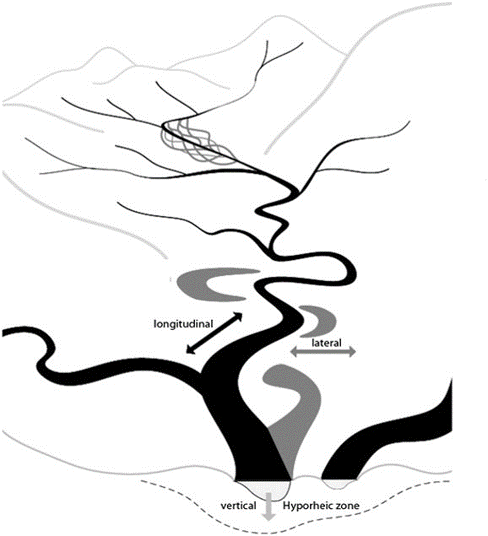

2 Approach
abfishpass is a decision-support tool intended to compliment watershed connectivity remediation planning processes (see Watershed Connectivity Remediation Planning practitioners’ guide), and the decisions made during the planning workshops with partners will influence the inputs, parameters, and outputs of the spatial models. This collaborative method blends local stakeholder and rightsholder knowledge with innovative GIS analyses to gain a shared understanding of where remediation efforts will have the greatest benefit for fish. The primary steps in the spatial modelling approach are:
- Define the geographic scope
- Define the thematic scope
- Estimate watershed accessibility and habitat distribution
- Quantify current connectivity status of the watershed
- Undertake barrier prioritization
abfishpass is designed to be flexible to allow users to customize the selection of geographic scope (usually watersheds), target species, and barrier types that feed into the model tools. Currently, the tools only support modelling of longitudinal connectivity (i.e., upstream-downstream), but we hope to expand the tools to support other dimensions of connectivity (e.g., lateral connectivity) in the future. WCRPs are intended to be “living plans” that are updated regularly as new information becomes available, or if local priorities and contexts change, which requires easily updated and run spatial models, which abfishpass aims to achieve.
2.1 Define the geographic scope
Simply, this is setting the geographic extent for analysis to focus the scope of the project, i.e., placing a polygon around the project area. All streams and barriers within the geographic extent are in scope, everything else is out of scope. The geographic scope is generally a watershed boundary, but can also be other types of geographic areas, including species-at-risk distribution areas and Indigenous traditional territory boundaries.
In Alberta, the Hydrologic Unit Code (HUC) system is used to define watersheds at various scales. Generally, abfishpass should be used with HUC4, HUC6, or HUC8 watersheds.
2.2 Define the thematic scope
Connectivity is a critical component of freshwater ecosystems that encompasses a variety of factors related to ecosystem structure and function, such as the ability of aquatic organisms to disperse and/or migrate, the transportation of energy and matter (e.g., nutrient cycling and sediment flows), and temperature regulation. Though each of these factors are important when considering the health of a watershed, for the purposes of WCRPs the term “connectivity” is generally defined as the degree to which aquatic species can disperse and/or migrate freely through freshwater systems. WCRPs are intended to focus on the direct remediation and prevention of localized, physical barriers instead of the broad land-use patterns that are causing chronic connectivity issues in the watershed, which differentiates this process from traditional watershed or fish habitat restoration plans. As such, defining the thematic scope of “connectivity” helps determine key parameters for spatial modelling, and comprises three main concepts:
- Target species
- Dimensions of connectivity
- Barrier types
Target species
The choice of which target species to select will depend on several factors, such as funding source priorities, the availability of species-distribution data to inform the spatial analyses, and the ecological and cultural priorities of the team. Sometimes target species can be combined into groups or “guilds” to simplify the planning and spatial modelling processes (e.g., Coldwater Salmonids for the Berland-Wildhay project).
The selection of target species will inform spatial modelling in two ways:
- Life history characteristics - the way species move through freshwater systems will help determine which barriers affect their movements and the way we quantify the connectivity status of the watershed (see Table 1).
- Habitat use - the geomorphic characteristics of a stream reach that are suitable for spawning, rearing, or other life stages will vary by species (see Estimate watershed accessibility and habitat distribution).
| Life history | Description |
|---|---|
| Diadromous | Species that migrate between the ocean and freshwater to complete their life cycles. These include species that spawn in freshwater and migrate to the ocean (anadromous) and vice versa (catadromous). |
| Adfluvial | Species that migrate between lakes or reservoirs and rivers. |
| Fluvial | Species that migrate between mainstem rivers and tributaries. |
| Resident | Species that typically spend their entire life cycle near where they hatched, though may occasionally disperse |
Dimensions of connectivity
There are four widely recognized dimensions of structural connectivity of freshwater systems (see Table 2), each of which will be impacted by different barrier types and therefore creates different analysis needs for spatial modelling.
| Connectivity dimension | Description |
|---|---|
| Longitudinal | Connectivity of a stream along the upstream-downstream plane (Figure 1), including access to tributaries and spawning and rearing habitat. Longitudinal connectivity can be fragmented by physical barriers (e.g., anthropogenic or natural structures) or by physiological limits of distribution for species (e.g., stream gradient, temperature, or flow requirements). |
| Lateral | Connectivity of a stream bed to adjacent riparian wetlands and floodplains (Figure 1), including access to rearing and overwintering habitat. Lateral connectivity can be fragmented by physical barriers, channelization, armouring of the stream bed, or artificial flow regulation. |
| Vertical | Connectivity of a stream bed to groundwater/hyporheic zone (Figure 1), including access to oxygen-rich temperature refugia. Vertical connectivity can be fragmented by water withdrawals and anthropogenically induced changes to the hydrological, thermal, and sediment regimes of the watershed. |
| Temporal | Connectivity variability in any of the three spatial dimensions based on temporal changes in the natural flow regime. Variation in temporal connectivity occurs naturally; however, fragmentation can be exacerbated through anthropogenically induced changes to the hydrological, thermal, and sediment regimes of the watershed. |
Since the WCRP process and supporting spatial models focus on the direct remediation and prevention of localized, physical barriers to connectivity, the structural dimensions that WCRPs will typically focus on are longitudinal and lateral, because 1) fragmentation to those dimensions of connectivity can be more directly tied to physical barriers and 2) field assessment, remediation planning, and barrier prioritization methods are further developed for them. Nonetheless, it is recommended that vertical and temporal connectivity still be accounted for in the planning process and spatial modelling because vertical and temporal factors can influence the success of remediation actions. For example:
- Longitudinal and lateral barriers may be passable to fish at certain times of the year, but alignment of passability timing with the needs of each life history stage must be considered when prioritizing barriers for remediation (e.g., juvenile migration to rearing habitat).
- Vertical connectivity issues may need to be addressed in conjunction with remediating longitudinal or lateral barriers (e.g., installing beaver-dam analogues in conjunction with dyke breaching to expand the area of groundwater influence and cold water refugia).

Currently, abfishpass only supports modelling of longitudinal connectivity, but we hope to expand the tools to support lateral connectivity in the future.
Barrier types
Within the context of WCRPs, connectivity is primarily constrained by physical barriers, including anthropogenic infrastructure such as dams, weirs, and stream crossings, and natural features such as waterfalls. The selection of dimensions of connectivity on which to focus will influence which barrier types are selected to include in the planning process and spatial models (see Table 3).
| Barrier Class | Barrier Types | Spatial Connectivity Dimensions |
|---|---|---|
| Water-control structures | Dams | Longitudinal |
| Weirs | Longitudinal | |
| Water-withdrawal structures | Vertical | |
| Flood-mitigation infrastructure | Tide gates, aboiteaux | Longitudinal, lateral |
| Pump stations | Vertical | |
| Stream crossings | Road-stream crossings | Longitudinal |
| Rail-stream crossings | Longitudinal | |
| Trail-stream crossings | Longitudinal | |
| Lateral | Dykes/levees | Lateral |
| Roads, rail lines | Longitudinal/lateral | |
| Berms, embankments | Lateral | |
| Natural | Waterfalls | Longitudinal |
| Debris jams (e.g., rocks, logs) | Longitudinal | |
| Sediment wedges | Longitudinal/lateral | |
| Physiological | Gradient | Longitudinal |
| Flow | Longitudinal, vertical | |
| Temperature | Vertical/longitudinal |
Additionally, it will be necessary for spatial modelling to compile information and data on barrier types that are not under consideration for remediation. For example, it is useful to incorporate natural barriers (e.g., waterfalls) into the spatial models to more accurately quantify the availability of habitat in the watershed, even though we don’t want to consider waterfalls for remediation. Barrier data will be overlaid on the stream network during analysis to allow for quantification of the amount of habitat potentially blocked by individual structures (which is the basis for barrier prioritization) and for estimating the overall connectivity status of the watershed.
Currently, abfishpass supports the following barrier types:
- Dams
- Stream crossings (road, rail, and trail)
- Waterfalls
- Gradient barriers
2.3 Estimate watershed accessibility and habitat distribution
Once the geographic and thematic scope have been defined, the steps are in place to derive the necessary parameters and perform the spatial analyses. The foundation for freshwater connectivity modelling, including abfishpass, are analyses to calculate key parameters within the hydrographic networks (i.e., spatial representation of streams/rivers and lakes). This involves “draping” the stream network over digital elevation models (DEMs) and developing or incorporating other models to derive key geomorphic characteristics of the stream network.
There are two primary steps to this process:
- Calculate accessibility of streams in the watershed
- Define useable habitat distribution
Stream Accessibility
Defining stream accessibility relies on incorporating natural (e.g., waterfall) and physiological (e.g., gradient barrier) data into spatial models - we don’t want to prioritize barriers for remediation that are on streams that target species cannot naturally access. The goal of this step is to define the accessibility values of each stream segment in the watershed, which can be categorized as:
- Potentially accessible: the stream segment should be accessible to target species in the absence of anthropogenic barriers
- Not accessible: the stream segment is not accessible to target species, even in the absence of anthropogenic barriers (i.e., there is a natural barrier like a waterfall or gradient barrier)
- Accessible: the stream segment is potentially accessible and is downstream of any known anthropogenic barriers
Waterfall data may need field verification as part of the iterative barrier prioritization process, as some species can pass waterfalls of a certain height (e.g., Chinook Salmon can pass waterfalls up to 5 m in height) and therefore some waterfalls may not be barriers to fish passage.
Identifying gradient barriers requires the derivation of gradient values from the elevation changes of the stream network. Different target species will have different swimming abilities, and therefore identifying stream reaches that have sustained gradient values above a given species’ passability threshold is important to exclude non-accessible streams from further analysis steps.
Accessibility is also dependent on species life history strategies, for example, a 5 m waterfall will restrict potentially accessible streams for anadramous species (they cannot move upstream of the waterfall during their migration). But, for a system with fluvial or resident species, there may exist population both upstream and downstream of the waterfall, meaning that the stream segments upstream of the waterfall should still be considered potentially accessible, as long as species presence is verifiable upstream of the waterfall.
For example, for fluvial species with a gradient barrier threshold set to 35% and target species observations upstream of a given “barrier”:
Assigning accessibility values refines the geographic scope of the analysis for subsequent steps – habitat will not be modelled and barriers will not be prioritized for not accessible streams. This allows resources to be focused on the parts of the watershed that will most benefit target species.
Model Potential Habitat
Calculating stream accessibility helps refine the scope for analysis; however, it does not guarantee that accessible and potentially accessible streams will support useable habitat (e.g., spawning, rearing, or overwintering habitat) for target species. During the connectivity status assessment and barrier prioritization process, we want to ensure that we are focusing on the quantity of potential useable habitat, rather than total stream length. For example, a barrier that is blocking 2 km of spawning habitat should be prioritized over a barrier that is blocking 200 m of spawning habitat and 5 km of non-habitat.
To model potential habitat in the watershed, abfishpass adapts the Intrinsic Potential (IP) habitat modelling framework (see Sheer et al. 2009). The IP framework derives three key geomorphic parameters of stream segments, which are used to assign potential habitat values:
- Gradient
- Discharge
- Channel confinement (the ratio of channel width to valley/floodplain width)
The framework can be custimized to model individual habitat types (e.g., spawning vs. rearing) separately for each species. The IP model is not intended to replace field assessment, but rather acts as a decision-support tool to identify the stream segments in the watershed that are most likely to support useable habitat, which feeds into the iterative barrier prioritization process.
Unfortunately, after undertaking a thorough literature review, the supporting information does not exist to derive thresholds for each IP parameter for Coldwater Salmonid species in Alberta for the Berland-Wildhay Connectivity Remediation Planning project. Nonetheless, the abfishpass tools have been developed to support the required inputs for the IP framework for when we are able to derive species-specific thresholds for each parameter. AWC, AEP, and CWF will work with species experts to begin deriving these parameter thresholds. When in place the model will evaluate whether a stream segment falls within the minimum and maximum values for stream gradient, discharge, and channel confinement. This will help refine upstream habitat estimates for each barrier in the watershed.
In the absence of IP inputs, all >1 order stream segments are considered to be “potential habitat” in barrier prioritization and connectivity status calculations.
2.4 Quantify current connectivity status of the watershed
To inform the goal setting and barrier prioritization components of the WCRP process, it is necessary to quantify an estimate of the current connectivity status of the watershed. This will rely on the best available information, and can be updated over time as new data is collected (e.g., field inspections of modelled crossings).
To calculate the current connectivity status of the watershed it is necessary to overlay the barriers on the stream network (with accessibility and habitat already modelled). The tools will calculate the current status of a watershed by dividing the amount of potential habitat that is currently accessible (i.e., downstream of known anthropogenic barriers) by the total amount of potential habitat in the watershed.
\(Connectivity\;status = \frac{Accessible\;potential\;habitat}{Total\;potential\;habitat}\)
This status is used to inform goal-setting and track progress over time in the watershed connectivity remediation planning process.
2.5 Undertake barrier prioritization
Barriers will be prioritized based on those that will provide the greatest ecological benefit (i.e., will reconnect the greatest amount of habitat, if remediated). The upstream functional network (i.e., the amount of habitat upstream of the barrier in question, but downstream of all subsequent upstream barriers) will be calculated to inform the prioritization (see Figure 3).

Barriers that have been modelled are assumed to be barriers until field verification is undertaken and structures that have been assessed as “potential” barriers (e.g., may be passable at certain flow levels or for certain life history stages) require further investigation before a definitive remediation decision is made. Additionally, the habitat model will identify stream segments that have the potential to support spawning or rearing habitat for target species but does not attempt to quantify habitat quality or suitability, which will require additional field verification once barrier assessments have been completed. As such, the barrier prioritization process should be considered iterative and the initial list represents structures that are a priority to evaluate further through barrier assessment and habitat confirmations because some structures will likely be passable, others will not be associated with usable habitat, and others may not be feasible to remediate because of logistic considerations. Each time new information is acquired, the underlying datasets can be updated, and the abfishpass tools can be re-run to provide up-to-date results.